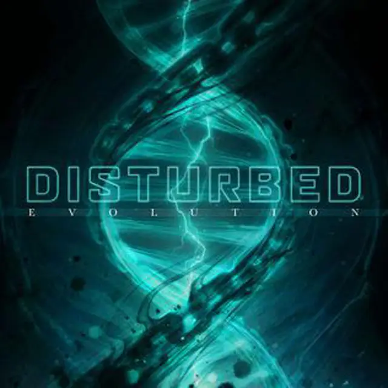
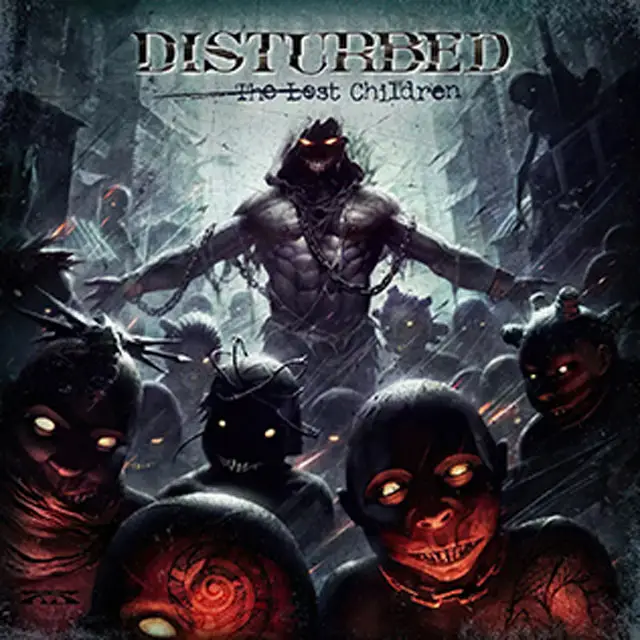
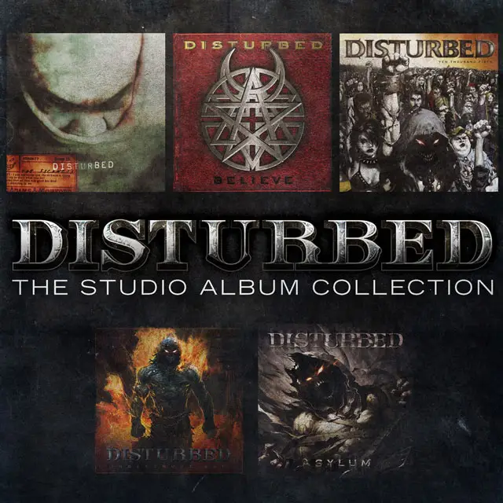
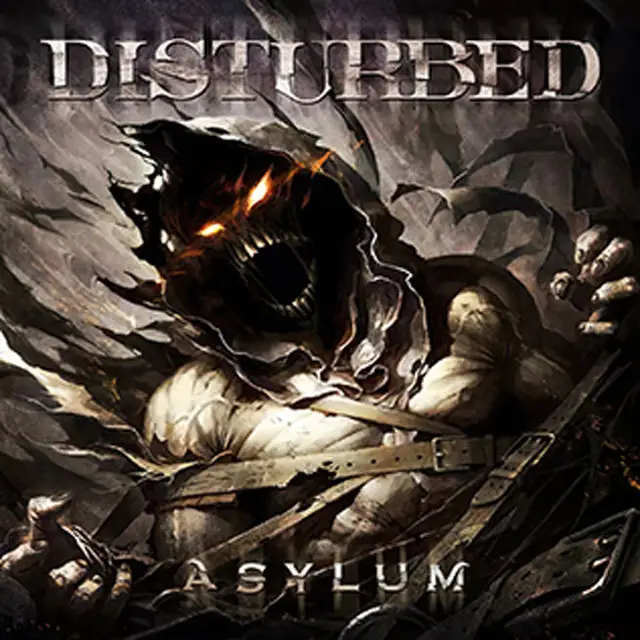
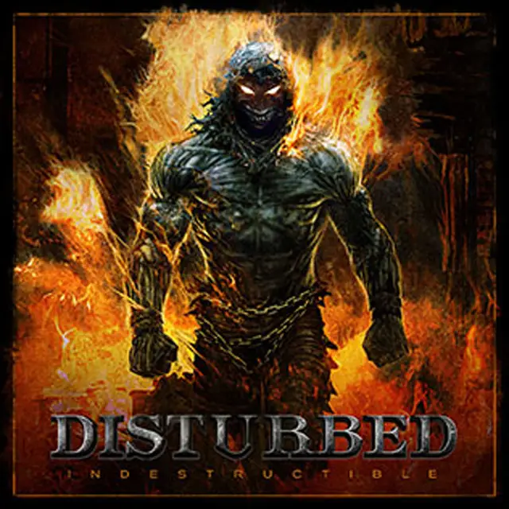
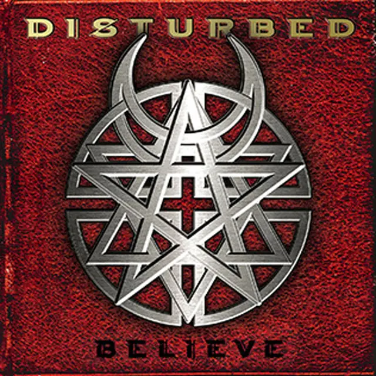
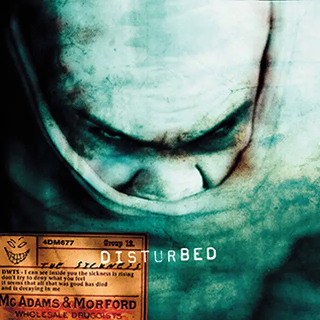

Categoría
Enlace a detalle
Ver detalleAnectodas
- Orígenes del Nombre: antes de que David Draiman se uniera a la banda, eran conocidos como Brawl. Sin embargo, el nombre originalmente iba a ser Crawl, pero tuvieron que cambiarlo porque ya estaba siendo utilizado por otra banda.
- Rebeldía de Draiman: David Draiman, el vocalista, creció en una familia judía ortodoxa y su rebeldía en la adolescencia lo llevó a ser expulsado de cinco escuelas. Esta rebeldía se refleja en las letras de las canciones de Disturbed, que a menudo cuestionan la existencia de un ser superior.
- El Éxito de “The Sickness”: su álbum debut, “The Sickness”, fue un éxito comercial principalmente debido a los sencillos “Down With the Sickness” y “Stupify”. Este álbum ayudó a establecer a Disturbed como una de las bandas más exitosas del nuevo milenio.
- Mensaje Ambiental: en su sencillo “Another Way to Die”, Disturbed aborda el tema del calentamiento global, mostrando su preocupación por los problemas ambientales a través de su música.
- La Versión de “The Sound of Silence”: la famosa versión de “The Sound of Silence” de Simon & Garfunkel fue grabada por Disturbed como parte de su tradición de hacer versiones. Según David Draiman, el desafío de hacer justicia a la canción original fue lo que los motivó a grabarla.
Albums
Divisive
2022

Evolution
2018
Immortalized
2015

The Lost Children
2011

The Studio Album Collection
2011

Asylum
2010

Indestructible
2008
Ten Thousand Fists
2005

Believe
2002

The Sickness
2000